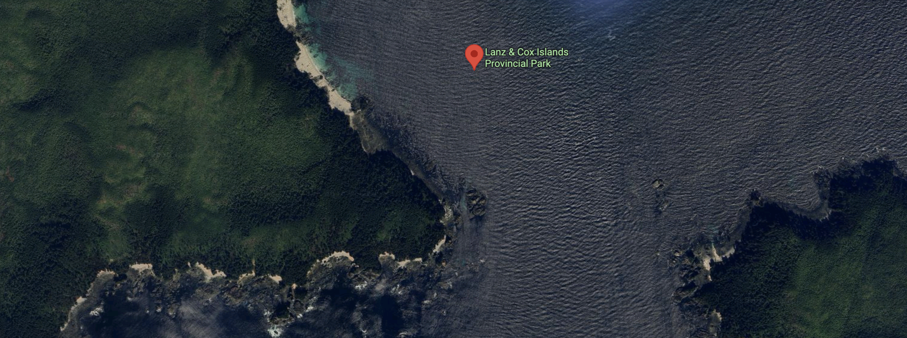
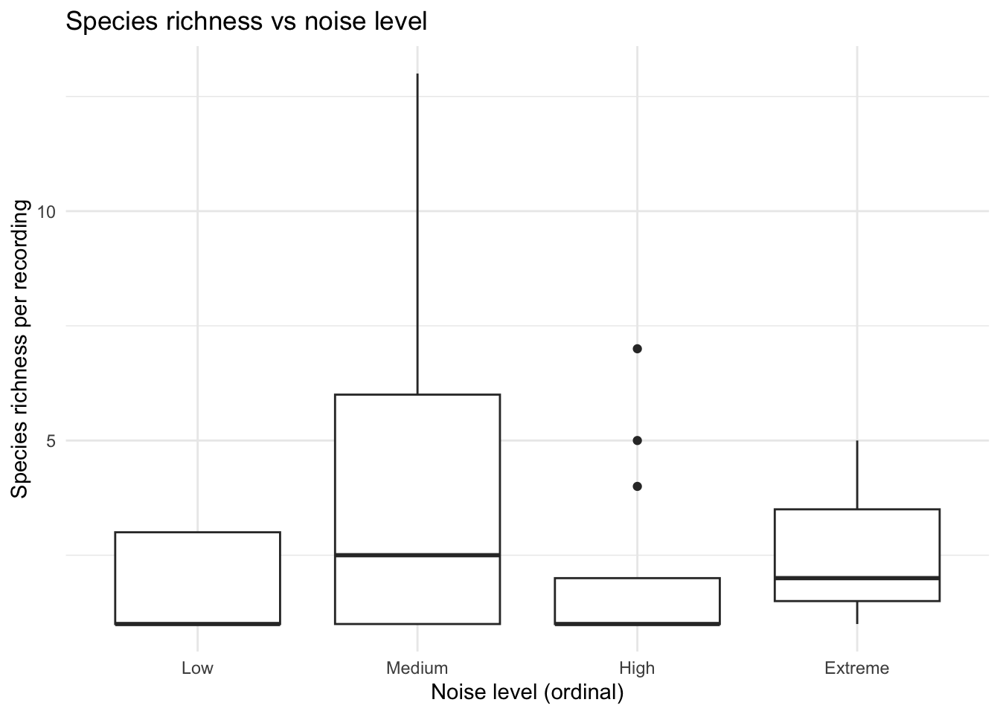

Report on the use of passive acoustic monitoring for songbirds and seabirds on Lanz and Cox Islands

Note
This report is dynamically generated, meaning its results may evolve with the addition of new data or further analyses. For the most recent updates, refer to the publication date and feel free to reach out to the authors.
Abstract
Passive acoustic monitoring was conducted on Lanz and Cox Islands to characterize seabird and songbird communities. Autonomous recording units (ARUs) were deployed at 20 locations and analyzed using a combination of machine-learning algorithms and expert validation. This report summarizes species presence, temporal patterns of detection, and relative abundance for seabirds and songbirds, and provides spatial representations of detections across both islands. These results establish a baseline to support evaluation of seabird prospecting activity and future changes in avian communities.
Land Acknowledgement
Introduction
Lanz and Cox Islands support important seabird and songbird habitats, yet populations have been negatively affected by the presence of invasive predators. As part of a broader restoration initiative, passive acoustic monitoring was implemented to document avian community composition. Autonomous recording units (ARUs) were deployed across both islands over three breeding seasons to capture vocal activity of seabirds and songbirds. Acoustic data were processed using the WildTrax (MacPhail et al. (2026)) data management platform in combination with BirdNET (Kahl et al. (2021)) and HawkEars (Huus et al. (2025)) machine-learning algorithms, with detections verified using expert review informed by prior experience in marine acoustic environments. This report presents the results of these analyses, including species detected, timing of detections, relative abundance metrics, and spatial patterns of occurrence. Together, these data provide a baseline for monitoring that can be compared to assess other project outcomes and ecological recovery.
Methods
Data collection
ARUs were deployed in three stages between 2024 and 2025 across Lanz and Cox Islands (Figure 1), with the final data retrievals taking place in the winter of 2025-26. Sites were accessed via helicopter. Recordings were collected on a schedule of recording every five minutes every 15 minutes at 24000 Hz. A total of 129243 recordings were collected totalling 10,736 audio hours of data (Figure 2).
| location | latitude | longitude | 2024 | 2025 |
|---|---|---|---|---|
| DC01 | 50.80230 | -128.6360 | 1 | 1 |
| DC02 | 50.80143 | -128.6338 | 1 | 1 |
| DC03 | 50.78923 | -128.6254 | 1 | 0 |
| DC06 | 50.80157 | -128.5735 | 0 | 1 |
| DC07 | 50.80359 | -128.6167 | 1 | 1 |
| DC09 | 50.79729 | -128.6203 | 1 | 1 |
| DC10 | 50.79253 | -128.6171 | 1 | 1 |
| DC11 | 50.81005 | -128.6068 | 1 | 1 |
| DC13 | 50.80575 | -128.6379 | 1 | 1 |
| DC15 | 50.79417 | -128.6310 | 1 | 1 |
| DL01 | 50.82893 | -128.7070 | 1 | 1 |
| DL02 | 50.81575 | -128.7114 | 1 | 1 |
| DL05 | 50.80633 | -128.6610 | 1 | 1 |
| DL06 | 50.82519 | -128.7040 | 1 | 1 |
| DL07 | 50.81814 | -128.7049 | 1 | 1 |
| DL09 | 50.81645 | -128.7001 | 1 | 1 |
| DL10 | 50.82627 | -128.6822 | 1 | 1 |
| DL11 | 50.81652 | -128.6691 | 0 | 1 |
| DL12 | 50.81344 | -128.6660 | 1 | 1 |
| DL15 | 50.82689 | -128.7106 | 1 | 1 |

Data management, processing and quality control
All recordings were uploaded to WildTrax in order for the data to be accessible and stored. Locations name were confirmed against the deployment information to ensure data from each location was consistently named across years.
Community data processing
For each sampling location and year, a total of nine autonomous recording unit (ARU) recordings, each 3 minutes in duration, were analyzed to characterize the songbird community. All vocalizing species were identified, and the abundance of each species was estimated using a count-removal framework based on time-to-first-detection, which helps reduce positive bias associated with repeated detections of the same individual within a recording. Recordings were intentionally distributed across diel periods to capture variation in vocal activity. Five recordings were selected during the dawn period (04:00–07:59), when songbird detectability is typically highest. Two recordings were selected during dusk (19:00–22:59), and two during the night (23:00–03:59), allowing for detection of crepuscular or nocturnally active species and providing a more complete representation of the avian community. This standardized temporal sampling design ensured consistent effort across locations and years while maximizing detectability across species with differing activity patterns. Coastal proximity may reduce ARU detection effectiveness, as wave action and wind-driven noise can mask vocalizations and shrink effective detection distances (Pijanowski et al. (2011)). We therefore examined whether distance to the nearest coastline predicted observed species richness across monitoring locations. We also compared geophonic acoustic indices (Towsey et al. (2017)) against WildTrax noise metrics to establish thresholds for task exclusion and to characterize background noise conditions at each site.
Use of automated classifiers on seabirds
We first wanted to assess the accuracy of the current version of the HawkEars classifier for three focal species in the group: Common Murre, Marbled Murrelet, and Black Oystercatcher. We extracted all recordings from WildTrax in which the classifier detected these species with a mean score of ~0.33 used. A human reviewer then verified each flagged task, confirming detections as true positives (TP) where the species was audible, or false positives (FP) where no supporting vocalization could be identified. Using these verified results, we applied the wt_evaluate_classifier() and wt_classifier_threshold() functions from the wildrtrax R package to calculate precision, recall, and F-score across a range of score thresholds. This allowed us to identify the minimum confidence threshold at which classifier performance was deemed acceptable for each species, balancing the trade-off between retaining true detections and excluding false positives. Recordings scoring below this optimized threshold were excluded from subsequent analyses, while those meeting or exceeding it were accepted without further manual review. This approach is consistent with emerging best practices for deploying automated classifiers at scale, where full human review is impractical and a validated threshold provides a reproducible and defensible basis for data inclusion.

Next we continued to intensify our evaluation of classifiers by using HawkEars 2.0 here.
Results
Species richness and diversity
A total of 41 species were found with a summary of detections found at Table 2. Figure 3 describes the relationship of species richness for each location across the two years of surveys. Shannon’s diversity was also calculated (see Figure 4).
| Species | Count of detections |
|---|---|
| Hermit Thrush | 171 |
| Swainson’s Thrush | 165 |
| Orange-crowned Warbler | 98 |
| Pacific Wren | 85 |
| Varied Thrush | 56 |
| Golden-crowned Kinglet | 52 |
| Song Sparrow | 45 |
| Fox Sparrow | 42 |
| Dark-eyed Junco | 39 |
| Western Flycatcher | 32 |
| American Robin | 31 |
| Townsend’s Warbler | 24 |
| American Crow | 19 |
| Pine Siskin | 16 |
| Bald eagle | 14 |
| Red Crossbill | 10 |
| Chestnut-backed Chickadee | 7 |
| Black-capped Chickadee | 6 |
| Chipping Sparrow | 6 |
| Common Raven | 5 |
| Cedar Waxwing | 3 |
| Glaucous-winged Gull | 3 |
| Black Oystercatcher | 2 |
| Glaucous Gull | 2 |
| Marbled Murrelet | 2 |
| White-winged Crossbill | 2 |
| Yellow-rumped Warbler | 2 |
| Blue Jay | 1 |
| Brown Creeper | 1 |
| Brown-headed Cowbird | 1 |
| Canada Jay | 1 |
| Lesser Yellowlegs | 1 |
| Red-breasted Nuthatch | 1 |
| Red-winged Blackbird | 1 |
| Savannah Sparrow | 1 |
| Spotted Towhee | 1 |
| Steller Sea Lion | 1 |
| White-throated Sparrow | 1 |
| Wilson’s Warbler | 1 |
| Winter Wren | 1 |
| Wood Duck | 1 |


Proximity to ocean and noise effects


Classifier results
Evaluation of HawkEars v1.0.8
Precision-recall curves were generated to evaluate classifier performance across all confidence thresholds for both Birdnet v2.1 and HawkEars v1.0.8. At low recall values (≤ 0.25), both classifiers achieved comparable precision (~0.65), indicating that high-confidence detections from either classifier are similarly reliable. As recall increased, classifier performance diverged: Birdnet v2.1 maintained a moderately higher precision across mid-to-high recall values (0.25–1.0), stabilizing around 0.30 at full recall. HawkEars declined more steeply, reaching ~0.13 at high recall, though it exhibited considerable variability across species (wide confidence interval) particularly between recall values of 0.25–0.75. These results suggest that Birdnet v2.1 is more conservative and consistent when detections are aggregated across species, while HawkEars shows greater species-level variability in the precision-recall tradeoff. The optimal operating threshold for both classifiers lies at low-to-moderate recall, where precision remains above 0.50.
wt_classifier_threshold(eval)# A tibble: 2 × 2
classifier threshold
<chr> <dbl>
1 Birdnet v2.1 0.53
2 Hawkears v1.0.8 0.4 ggplot(eval, aes(x=recall, y=precision, colour=classifier)) +
geom_smooth() +
theme_bw() +
xlab("Classifier Recall") +
ylab("Classifier Precision") +
ylim(0,1)`geom_smooth()` using method = 'loess' and formula = 'y ~ x'
HawkEars 2.0
Discussion and recommendations
Huus, Jan, Kevin G Kelly, Erin M Bayne, and Elly C Knight. 2025. “HawkEars: A Regional, High-Performance Avian Acoustic Classifier.” Ecological Informatics 87: 103122.
Kahl, Stefan, Connor M Wood, Maximilian Eibl, and Holger Klinck. 2021. “BirdNET: A Deep Learning Solution for Avian Diversity Monitoring.” Ecological Informatics 61: 101236.
MacPhail, Alexander G., Corrina Copp, Erin Bayne, Charles Francis, Michael Packer, Chad Klassen, Kevin Kelly, et al. 2026. “WildTrax: A Platform for the Management, Storage, Processing, Sharing and Discovery of Avian Data.”
Oksanen, Jari, Frank G Blanchet, Roeland Kindt, Pierre Legendre, Peter R Minchin, Robert B O’Hara, Gavin L Simpson, et al. 2010. “Canonical Analysis of Principal Coordinates: A Useful Method of Constrained Ordination for Ecology.” Ecology 92 (3): 597–611. https://doi.org/10.1890/10-0340.1.
Pijanowski, Bryan C., Luis J. Villanueva-Rivera, Sarah L. Dumyahn, Almo Farina, Bernie L. Krause, Brian M. Napoletano, Stuart H. Gage, and Nadia Pieretti. 2011. “Soundscape Ecology: The Science of Sound in the Landscape.” BioScience 61 (3): 203–16. https://doi.org/10.1525/bio.2011.61.3.6.
Shannon, Claude Elwood. 1948. “A Mathematical Theory of Communication.” The Bell System Technical Journal 27 (3): 379–423.
Towsey, Michael W et al. 2017. “The Calculation of Acoustic Indices Derived from Long-Duration Recordings of the Natural Environment.”